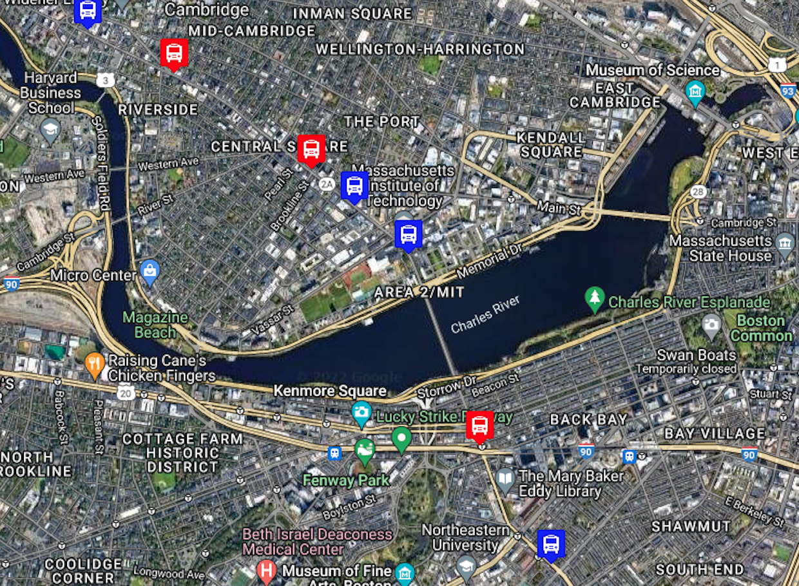

Hello World. I am a web development student at MIT xPro, learning Fullstack development with MERN. After teaching piano for over 20 years in New York City and Chicago, I became very interested in web development. During my free time I took online courses in HTML/CSS/JS, finding it fascinating and stimulating creatively. You can find me on GitHub at Rosshoven - named after one of my favorite composers - and the best way to contact me is on my LinkedIn.
There are many similarities between playing piano and web design, both requiring practice, patience and imagination. My goal is to take my web dev skills to the next level and begin a career in web development.
Header
Left
Right
Footer
PROJECTS
PacMen
Factory for making Pacmen and placing them randomly on the page.
Eyes Following Cursor
Two eyes that will follow your cursor wherever it may go on the page.

Live Bus Tracker
Real time bus tracker for the MBTA Bus 1 in Boston, between Nubian and Harvard.